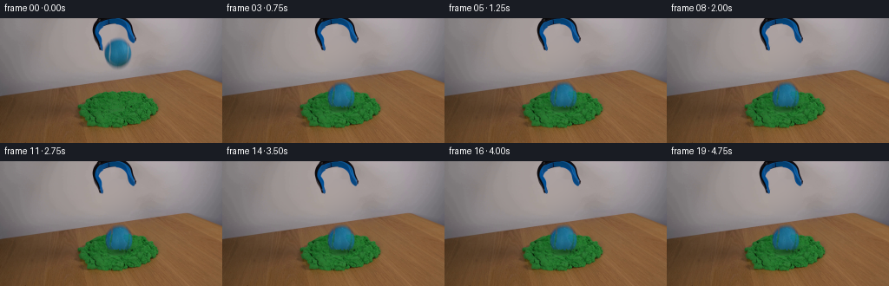
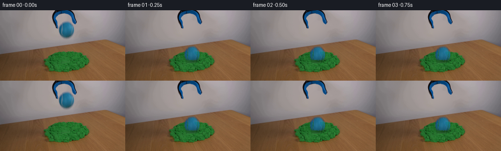
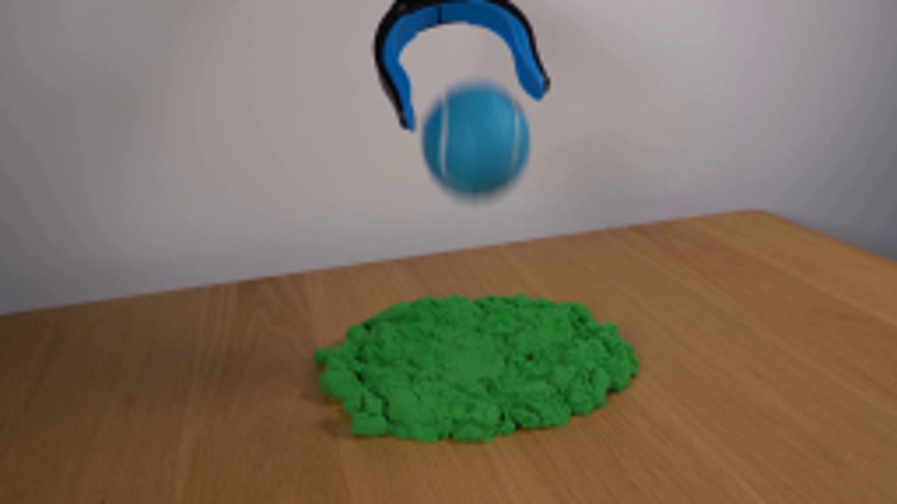
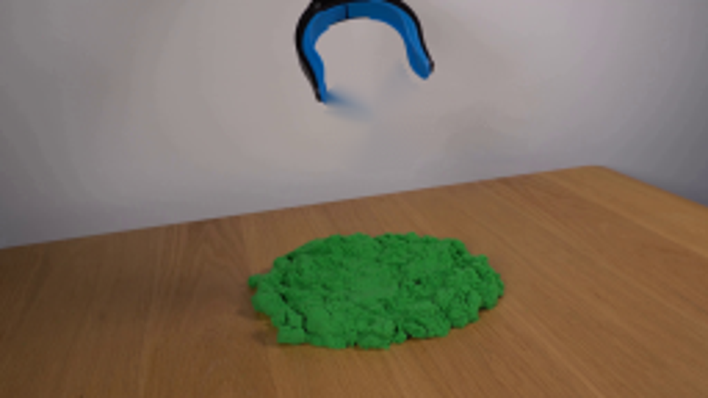
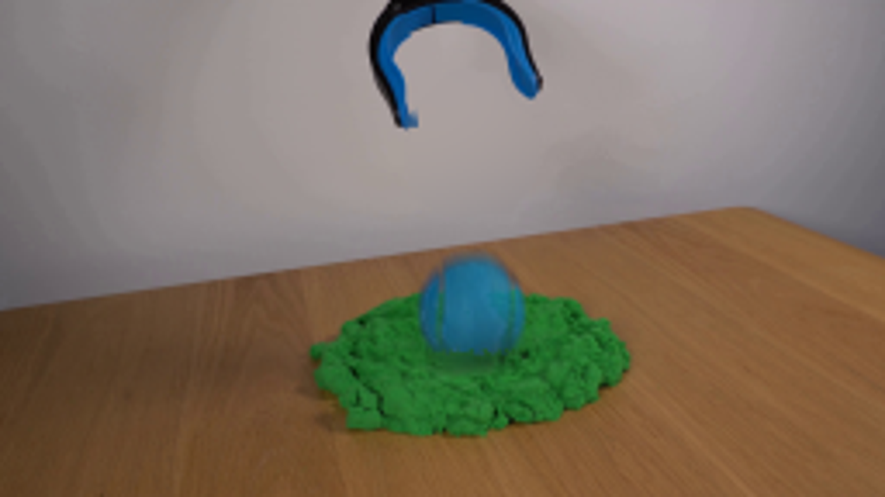
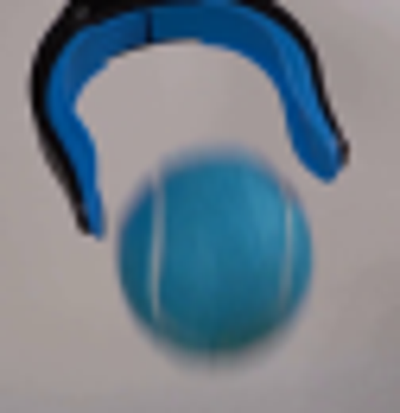

CODING AGENTS AS PIXEL WORLD MODELS
traex/GPT-6.1-Sol · 0016
点击播放 · 原生 RGB 像素
逐轮保存的候选
回放视频、检查图与代码变化。
每份候选均可单独播放。实际图片检查记录在下方工具轨迹中。
候选 01播放与检查图
点击播放 · 原生 RGB 像素
展开代码变化
--- 上一保存版本
+++ 本次保存版本
@@ -0,0 +1,110 @@
+from pathlib import Path
+import numpy as np
+from PIL import Image, ImageFilter
+import cv2
+from scipy.ndimage import gaussian_filter
+from artifact_io import save
+
+ROOT = Path(__file__).resolve().parent
+
+def generate():
+ src = np.array(Image.open(ROOT/'first_frame.png').convert('RGB'))
+ h,w = src.shape[:2]
+ yy,xx = np.mgrid[:h,:w].astype(np.float32)
+ # Recover the unoccupied, softly lit wall underneath the airborne ball.
+ remove = np.zeros((h,w),np.uint8)
+ cv2.fillPoly(remove,[np.array([(130,20),(144,21),(147,28),(153,33),(156,40),(154,52),(147,61),(128,62),(119,56),(117,46),(118,33),(125,25)])],255)
+ base = cv2.inpaint(src,remove,4,cv2.INPAINT_TELEA).astype(np.float32)
+ # A low order wall-light fit avoids propagating blue into the missing area.
+ support = (xx>110)&(xx<166)&(yy>17)&(yy<65)&(remove==0)
+ support &= (src[:,:,0]>140)&(src[:,:,1]>125)&(src[:,:,2]>125)
+ X = np.stack([np.ones_like(xx),(xx-136)/25,(yy-40)/25,((xx-136)/25)**2,((yy-40)/25)**2,(xx-136)*(yy-40)/625],axis=-1)
+ coeff=np.linalg.lstsq(X[support],src[support].astype(float),rcond=None)[0]
+ wall=X@coeff
+ m=gaussian_filter((remove/255).astype(float),.65)
+ # Preserve the claw, including its antialiased silhouette.
+ tool=(yy<37)&(xx<121)
+ m[tool]=0
+ base=base*(1-m[...,None])+wall*m[...,None]
+
+ # A foreground matte derived only from the photographed tennis ball.
+ # Reversing its wall-colored edge mixture keeps a soft blue fuzz silhouette.
+ ball_region=(((xx-135.6)/17.2)**2+((yy-40.0)/18.5)**2)<1
+ a=np.clip((wall[:,:,0]-src[:,:,0])/(wall[:,:,0]-23),0,1)
+ a*=ball_region
+ a[(yy<22)|(yy>58)]=0
+ # Full opacity across the colored central surface, soft optical edge outside.
+ a=np.where(a>.89,1,a)
+ a=gaussian_filter(a,.32)
+ color=(src.astype(float)-wall*(1-a[...,None]))/np.maximum(a[...,None],.025)
+ color=np.clip(color,0,255)
+ # Save as premultiplied data for subpixel translations and rotation.
+ pm=color*a[...,None]
+
+ sand=(base[:,:,1]>base[:,:,0]*1.2)&(base[:,:,1]>base[:,:,2]*1.25)&(yy>76)
+ sand_soft=gaussian_filter(sand.astype(np.float32),.65)
+ cx,cy=137.,101.
+ q=((xx-cx)/26)**2+((yy-cy)/15)**2
+ influence=np.exp(-q*1.3)
+ rng=np.random.default_rng(46)
+ rim_noise=gaussian_filter(rng.normal(0,1,(h,w)),.45)
+ frames=[src.copy()]
+ # Approximately 13 cm fall followed by damped, nonelastic penetration.
+ g=2650.
+ initial_y=40.
+ touch_y=85.8
+ contact=np.sqrt(2*(touch_y-initial_y)/g)
+ for index in range(1,20):
+ t=index/4
+ tau=max(0,t-contact)
+ if t<contact:
+ ball_y=initial_y+.5*g*t*t
+ effect=0.
+ else:
+ # The loose cohesive grains absorb the energy instead of bouncing.
+ ball_y=90.7+2.2*np.exp(-tau*17)*np.sin(tau*35)-4.9*np.exp(-tau*23)
+ effect=1-np.exp(-tau*28)
+ ball_x=135.6+1.15*(1-np.exp(-tau*13))
+ pressure=effect*(1+.18*np.exp(-tau*12))
+ dx=(xx-cx)*.095*influence*pressure
+ dy=(yy-cy)*.12*influence*pressure+1.0*influence*pressure
+ ground=cv2.remap(base,(xx-dx).astype(np.float32),(yy-dy).astype(np.float32),cv2.INTER_CUBIC,borderMode=cv2.BORDER_REFLECT)
+ sand_now=cv2.remap(sand_soft,(xx-dx).astype(np.float32),(yy-dy).astype(np.float32),cv2.INTER_LINEAR,borderMode=cv2.BORDER_CONSTANT)
+ # Compressed cavity and a granular raised lip under the ball.
+ cavity=np.exp(-(((xx-ball_x)/17.8)**2+((yy-101.5)/7.0)**2)*1.4)
+ ringq=np.sqrt(((xx-ball_x)/19.5)**2+((yy-102.)/8.2)**2)
+ rim=np.exp(-((ringq-1)/.15)**2)
+ lighting=1-effect*.22*cavity*sand_now+effect*.10*rim*sand_now*(yy>101)
+ ground*=lighting[...,None]
+ # Soft contact shadow, distinctly sharper than its airborne shadow.
+ sep=max(0,86-ball_y)
+ shadow=np.exp(-(((xx-ball_x-1)/(16+sep*.13))**2+((yy-104)/(4+sep*.055))**2)*1.7)
+ ground*=1-(.22*effect+.04*(1-effect))*shadow[...,None]*sand_now[...,None]
+ # Tiny rotation from release preserves the real tennis-ball seam and texture.
+ angle=-min(tau*8,5.0)
+ M=cv2.getRotationMatrix2D((135.6,40),angle,1.0)
+ M[:,2]+=[ball_x-135.6,ball_y-40.]
+ ba=cv2.warpAffine(a.astype(np.float32),M,(w,h),flags=cv2.INTER_CUBIC)
+ bp=cv2.warpAffine(pm.astype(np.float32),M,(w,h),flags=cv2.INTER_CUBIC)
+ ba=np.clip(ba,0,1)
+ # First sampled impact retains a short natural vertical motion streak.
+ motion=1.0*np.exp(-tau*21)
+ if motion>.08:
+ accum_a=ba.copy();accum_p=bp.copy()
+ for shift in [-motion,motion]:
+ T=np.float32([[1,0,0],[0,1,shift]])
+ accum_a+=cv2.warpAffine(ba,T,(w,h),flags=cv2.INTER_LINEAR)
+ accum_p+=cv2.warpAffine(bp,T,(w,h),flags=cv2.INTER_LINEAR)
+ ba=accum_a/3;bp=accum_p/3
+ frame=ground*(1-ba[...,None])+bp
+ # Foreground kinetic sand occludes the embedded lower spherical cap.
+ lip_y=101.1+.55*np.sin((xx-121)*1.6)+.7*rim_noise
+ front=np.clip((yy-lip_y+.4)/1.2,0,1)
+ front*=np.exp(-((xx-ball_x)/18.5)**8)*effect*sand_now
+ frame=frame*(1-front[...,None])+ground*front[...,None]
+ frames.append(np.uint8(np.clip(np.rint(frame),0,255)))
+ return np.stack(frames)
+
+if __name__=='__main__':
+ frames=generate()
+ save(frames,ROOT)
候选 02播放与检查图
点击播放 · 原生 RGB 像素


展开代码变化
--- 上一保存版本
+++ 本次保存版本
@@ -23,7 +23,7 @@
wall=X@coeff
m=gaussian_filter((remove/255).astype(float),.65)
# Preserve the claw, including its antialiased silhouette.
- tool=(yy<37)&(xx<121)
+ tool=(yy<37)&(xx<119)
m[tool]=0
base=base*(1-m[...,None])+wall*m[...,None]
可观测工具轨迹
实际执行的命令与返回图片。
命令 1exit 0
/bin/bash -lc 'ls -la; cat prompt.txt; cat GENERATION_RULES.md'
命令 2exit 0
/bin/bash -lc "cat artifact_io.py; python - <<'PY'
import importlib.util
for s in ['numpy','PIL','cv2','scipy']:
print(s, bool(importlib.util.find_spec(s)))
from PIL import Image
im=Image.open('first_frame.png');print(im.size);im.resize((1024,576)).save('.tmp/enlarged.png')
PY"命令 3exit 0
/bin/bash -lc "python - <<'PY'
from PIL import Image
im=Image.open('first_frame.png'); im.crop((102,0,165,65)).resize((504,520)).save('.tmp/crop.png')
import numpy as np
ar=np.array(im)
for y in [22,24,26,28,30,35,40,45,50,55,58]:
print(y,[(x,ar[y,x].tolist()) for x in [119,121,123,126,130,135,140,145,148,150,153]])
PY"命令 4exit 0
/bin/bash -lc "cat > .tmp/test_bg.py <<'PY'
import cv2
import numpy as np
from PIL import Image
im=np.array(Image.open('first_frame.png'))
mask=np.zeros(im.shape[:2],np.uint8)
cv2.fillPoly(mask,[np.array([(130,20),(144,21),(147,28),(153,33),(156,40),(154,52),(147,61),(128,62),(119,56),(117,46),(118,33),(125,25)])],255)
bg=cv2.inpaint(im,mask,5,cv2.INPAINT_TELEA)
Image.fromarray(bg).resize((1024,576)).save('.tmp/bg.png')
Image.fromarray(bg).save('.tmp/bgsmall.png')
Image.fromarray(mask).save('.tmp/mask.png')
PY
python .tmp/test_bg.py"命令 5exit 1
/bin/bash -lc "cat > generate.py <<'PY'
from pathlib import Path
import numpy as np
from PIL import Image, ImageFilter
import cv2
from scipy.ndimage import gaussian_filter
from artifact_io import save
ROOT = Path(__file__).resolve().parent
def generate():
src = np.array(Image.open(ROOT/'first_frame.png').convert('RGB'))
h,w = src.shape[:2]
yy,xx = np.mgrid[:h,:w].astype(np.float32)
# Recover the unoccupied, softly lit wall underneath the airborne ball.
remove = np.zeros((h,w),np.uint8)
cv2.fillPoly(remove,[np.array([(130,20),(144,21),(147,28),(153,33),(156,40),(154,52),(147,61),(128,62),(119,56),(117,46),(118,33),(125,25)])],255)
base = cv2.inpaint(src,remove,4,cv2.INPAINT_TELEA).astype(np.float32)
# A low order wall-light fit avoids propagating blue into the missing area.
support = (xx>110)&(xx<166)&(yy>17)&(yy<65)&(remove==0)
support &= (src[:,:,0]>140)&(src[:,:,1]>125)&(src[:,:,2]>125)
X = np.stack([np.ones_like(xx),(xx-136)/25,(yy-40)/25,((xx-136)/25)**2,((yy-40)/25)**2,(xx-136)*(yy-40)/625],axis=-1)
coeff=np.linalg.lstsq(X[support],src[support].astype(float),rcond=None)[0]
wall=X@coeff
m=gaussian_filter((remove/255).astype(float),.65)
# Preserve the claw, including its antialiased silhouette.
tool=(yy<37)&(xx<121)
m[tool]=0
base=base*(1-m[...,None])+wall*m[...,None]
# A foreground matte derived only from the photographed tennis ball.
# Reversing its wall-colored edge mixture keeps a soft blue fuzz silhouette.
ball_region=(((xx-135.6)/17.2)**2+((yy-40.0)/18.5)**2)<1
a=np.clip((wall[:,:,0]-src[:,:,0])/(wall[:,:,0]-23),0,1)
a*=ball_region
a[(yy<22)|(yy>58)]=0
# Full opacity across the colored central surface, soft optical edge outside.
a=np.where(a>.89,1,a)
a=gaussian_filter(a,.32)
color=(src.astype(float)-wall*(1-a[...,None]))/np.maximum(a[...,None],.025)
color=np.clip(color,0,255)
# Save as premultiplied data for subpixel translations and rotation.
pm=color*a[...,None]
sand=(base[:,:,1]>base[:,:,0]*1.2)&(base[:,:,1]>base[:,:,2]*1.25)&(yy>76)
sand_soft=gaussian_filter(sand.astype(np.float32),.65)
cx,cy=137.,101.
q=((xx-cx)/26)**2+((yy-cy)/15)**2
influence=np.exp(-q*1.3)
rng=np.random.default_rng(46)
rim_noise=gaussian_filter(rng.normal(0,1,(h,w)),.45)
frames=[src.copy()]
# Approximately 13 cm fall followed by damped, nonelastic penetration.
g=2650.
initial_y=40.
touch_y=85.8
contact=np.sqrt(2*(touch_y-initial_y)/g)
for index in range(1,20):
t=index/4
tau=max(0,t-contact)
if t<contact:
ball_y=initial_y+.5*g*t*t
effect=0.
else:
# The loose cohesive grains absorb the energy instead of bouncing.
ball_y=90.7+2.2*np.exp(-tau*17)*np.sin(tau*35)-4.9*np.exp(-tau*23)
effect=1-np.exp(-tau*28)
ball_x=135.6+1.15*(1-np.exp(-tau*13))
pressure=effect*(1+.18*np.exp(-tau*12))
dx=(xx-cx)*.095*influence*pressure
dy=(yy-cy)*.12*influence*pressure+1.0*influence*pressure
ground=cv2.remap(base,xx-dx,yy-dy,cv2.INTER_CUBIC,borderMode=cv2.BORDER_REFLECT)
sand_now=cv2.remap(sand_soft,xx-dx,yy-dy,cv2.INTER_LINEAR,borderMode=cv2.BORDER_CONSTANT)
# Compressed cavity and a granular raised lip under the ball.
cavity=np.exp(-(((xx-ball_x)/17.8)**2+((yy-101.5)/7.0)**2)*1.4)
ringq=np.sqrt(((xx-ball_x)/19.5)**2+((yy-102.)/8.2)**2)
rim=np.exp(-((ringq-1)/.15)**2)
lighting=1-effect*.22*cavity*sand_now+effect*.10*rim*sand_now*(yy>101)
ground*=lighting[...,None]
# Soft contact shadow, distinctly sharper than its airborne shadow.
sep=max(0,86-ball_y)
shadow=np.exp(-(((xx-ball_x-1)/(16+sep*.13))**2+((yy-104)/(4+sep*.055))**2)*1.7)
ground*=1-(.22*effect+.04*(1-effect))*shadow[...,None]*sand_now[...,None]
# Tiny rotation from release preserves the real tennis-ball seam and texture.
angle=-min(tau*8,5.0)
M=cv2.getRotationMatrix2D((135.6,40),angle,1.0)
M[:,2]+=[ball_x-135.6,ball_y-40.]
ba=cv2.warpAffine(a.astype(np.float32),M,(w,h),flags=cv2.INTER_CUBIC)
bp=cv2.warpAffine(pm.astype(np.float32),M,(w,h),flags=cv2.INTER_CUBIC)
ba=np.clip(ba,0,1)
# First sampled impact retains a short natural vertical motion streak.
motion=1.0*np.exp(-tau*21)
if motion>.08:
accum_a=ba.copy();accum_p=bp.copy()
for shift in [-motion,motion]:
T=np.float32([[1,0,0],[0,1,shift]])
accum_a+=cv2.warpAffine(ba,T,(w,h),flags=cv2.INTER_LINEAR)
accum_p+=cv2.warpAffine(bp,T,(w,h),flags=cv2.INTER_LINEAR)
ba=accum_a/3;bp=accum_p/3
frame=ground*(1-ba[...,None])+bp
# Foreground kinetic sand occludes the embedded lower spherical cap.
lip_y=101.1+.55*np.sin((xx-121)*1.6)+.7*rim_noise
front=np.clip((yy-lip_y+.4)/1.2,0,1)
front*=np.exp(-((xx-ball_x)/18.5)**8)*effect*sand_now
frame=frame*(1-front[...,None])+ground*front[...,None]
frames.append(np.uint8(np.clip(np.rint(frame),0,255)))
return np.stack(frames)
if __name__=='__main__':
frames=generate()
save(frames,ROOT)
PY
python generate.py"命令 6exit 0
/bin/bash -lc "python - <<'PY'
p='generate.py'
s=open(p).read().replace('xx-dx,yy-dy,cv2.INTER_CUBIC','(xx-dx).astype(np.float32),(yy-dy).astype(np.float32),cv2.INTER_CUBIC').replace('xx-dx,yy-dy,cv2.INTER_LINEAR','(xx-dx).astype(np.float32),(yy-dy).astype(np.float32),cv2.INTER_LINEAR')
open(p,'w').write(s)
PY
python generate.py"命令 7exit 0
/bin/bash -lc "python - <<'PY'
from PIL import Image
im=Image.open('frames/01.png');im.resize((1024,576)).save('.tmp/f1large.png')
PY"命令 8exit 0
/bin/bash -lc "python - <<'PY'
p='generate.py';s=open(p).read().replace('tool=(yy<37)&(xx<121)','tool=(yy<37)&(xx<119)');open(p,'w').write(s)
PY
python generate.py
python - <<'PY'
import numpy as np
from PIL import Image
from pathlib import Path
fs=np.stack([np.array(Image.open(p)) for p in sorted(Path('frames').glob('*.png'))])
assert fs.shape==(20,144,256,3)
assert fs.dtype==np.uint8
assert np.array_equal(fs[0],np.array(Image.open('first_frame.png')))
print('Validated 20 RGB frames; frame 00 is pixel-identical.')
PY"视觉工具实际返回图片 1

视觉工具实际返回图片 2

视觉工具实际返回图片 3

视觉工具实际返回图片 4

视觉工具实际返回图片 5

保存候选 2 份；完成命令 8 次；可验证图片返回 5 张。原始 API 响应与完整日志保留在本地。